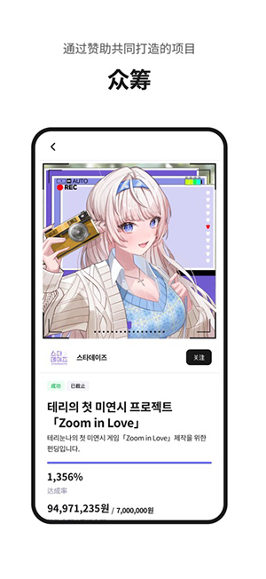

Fanding 快问快答：追星、专辑联动、NFC 解锁一张卡讲透
Fanding 是韩国文娱圈的粉丝社区，主打实体专辑 NFC 扫描解锁独家数字内容。这篇问答速查覆盖定位、注册、NEMOZ 联动、设备管理、常见坑等高频问题，帮你判断要不要装。
整理一篇关于 Fanding 的快问快答——从它是什么到装不装，一口气讲透。
Fanding 到底是啥？跟追星有什么关系？
简单说，Fanding 是一个面向 K-pop 等文娱领域的粉丝社区平台，同时承担了实体专辑数字内容解锁的功能。它的官网上能看到完整的产品介绍和艺人合作动态。核心逻辑是：艺人或发行方在实体专辑里嵌入一张 NFC 芯片卡，粉丝买到实体专辑后，用手机贴近卡就能扫描激活，解锁一系列在线内容。
平台本身提供社区、粉丝投票、内容共创等社交玩法，而 NEMOZ 专辑联动是它最有辨识度的功能——也是大多数人装 Fanding 的直接原因。
谁在用 Fanding？普通用户能用来干什么？
Fanding 的用户画像很明确：买韩国艺人实体专辑的粉丝。如果你只在国内流媒体平台听歌、不买实体专辑，那 Fanding 对你来说用处不大。
装了能干嘛？三件事：第一，激活你买到的实体专辑，解锁独家数字内容；第二，在社区里发帖、看其他粉丝的内容、参与投票和共创活动；第三，关注你喜欢的艺人动态。核心价值集中在「实体 → 数字」的那一下 NFC 扫描，社区功能更像是附赠的周边体验。

怎么注册？听说验证码老是收不到？
先装应用——安装包从官方下载拿就行，注册分手机号和邮箱两种方式，国内用户最容易踩的坑是区号没改——Fanding 默认是韩国区号 +82，一定要手动切到 +86 中国区号再输入手机号，不然短信根本发不到。
手机号验证码走不通可以换邮箱试试，Gmail 或 Outlook 的海外兼容性比国内邮箱好很多。邮箱验证码如果也没收到，第一时间检查垃圾邮件文件夹。密码找回通过登录页的「忘记密码」走同样的验证码流程就行。
NEMOZ 专辑联动是什么？实体专辑买了之后能解锁啥？
这是 Fanding 最核心的功能。激活一张 Nemo Album 之后，你会在 FANDING x NEMOZ 应用里看到三个标签页：音乐、视频、照片。音乐部分是完整的数字专辑曲目，支持后台播放和锁屏控件；视频部分是独家内容——不是 YouTube 上公开的 MV，而是 MV 幕后花絮、艺人问候视频、导演剪辑版这类你在别处找不到的东西；照片部分是高清无水印的概念照、MV 拍摄现场图，大部分可以直接长按保存到手机。
流媒体平台不会给你的独家素材，这就是 NEMOZ 的核心价值。
一张专辑能绑几台手机？换手机怎么办？
三条硬规则必须记牢：一个 Fanding 账号最多绑 2 台设备；同一个账号每月只能解绑一次；专辑不能跨账号转移。
换机流程不复杂——先在旧手机上走设备管理解绑，再用同一个 Fanding 账号在新手机登录就行，专辑内容跟着账号走，不需要重新扫 NFC。旧手机坏了没法操作也没关系，新手机登录后设备管理里应该能看到旧设备记录，直接远程解绑即可。
最保险的做法是长期只用一个 Fanding 账号，换手机不换账号。设备绑定的完整规则和操作步骤在Fanding文档里有更详细的说明。
跟 Spotify/Apple Music 比有必要装吗？
这俩不是替代关系，是互补。Spotify 能听专辑，但它不给你独家花絮视频、不给你无水印高清概念照、也不让你保存艺人问候视频。FANDING x NEMOZ 也不能替代流媒体平台——它只能播放你买过的实体专辑对应的数字内容，没有曲库搜索，没有推荐算法。
关键问题是：你买不买实体专辑，以及你关不关心独家素材。如果两个答案都是否定的，那 Fanding 完全没必要装；如果买专辑、想拿到网上没有的内容，那它有明确的价值。
有哪些容易踩的坑？
先说几个高频的：手机号注册忘改 +86 区号、解绑超过每月限额、误以为专辑可以跨账号转移。还有几个体验层面的局限：音乐和视频都是流媒体，不支持下载离线；区域版权可能导致部分内容在某些地区不可用；没有逐字滚动歌词。
注册时选好邮箱和手机号、长期用同一个账号、换机前记得提前解绑旧设备，这三件事做好能避免 90% 的麻烦。
值不值得装？
总结一下：买韩国艺人实体专辑的粉丝，值得装——独家视频和高清照片是流媒体平台给不了的增值体验；不买实体专辑、只听流媒体的用户，别装，装了也用不上。它是一个精准的工具型应用，目标人群之外的人不需要它。
如果你决定装，建议从邮箱注册开始（比手机号验证码稳定），第一次激活就用打算长期用的账号，后续换机换系统都不影响。关于 Fanding 的完整中文资料，我在GitHub、Gitee、GitCode 各留了一份，国内网络环境下也能顺利访问。